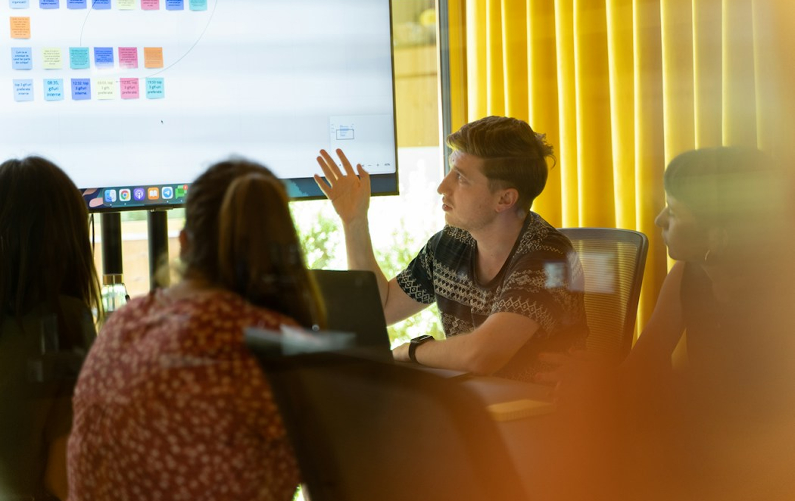
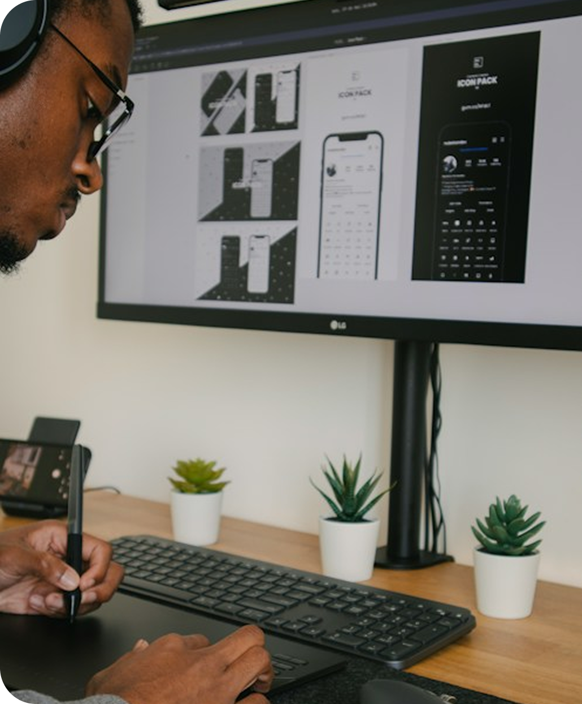
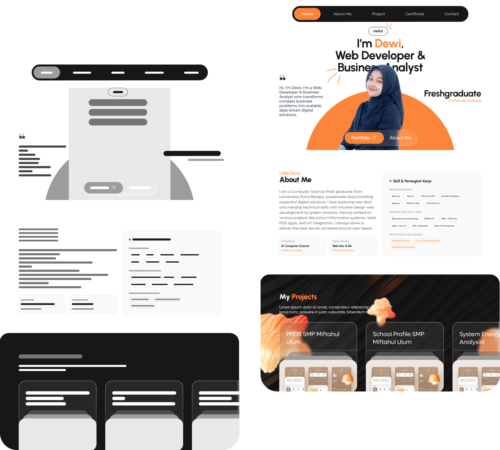
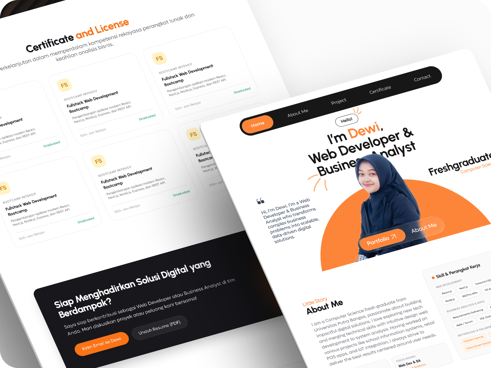
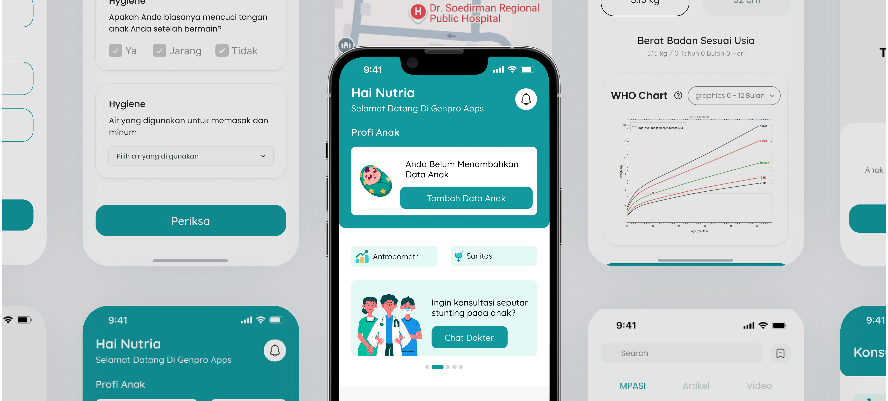
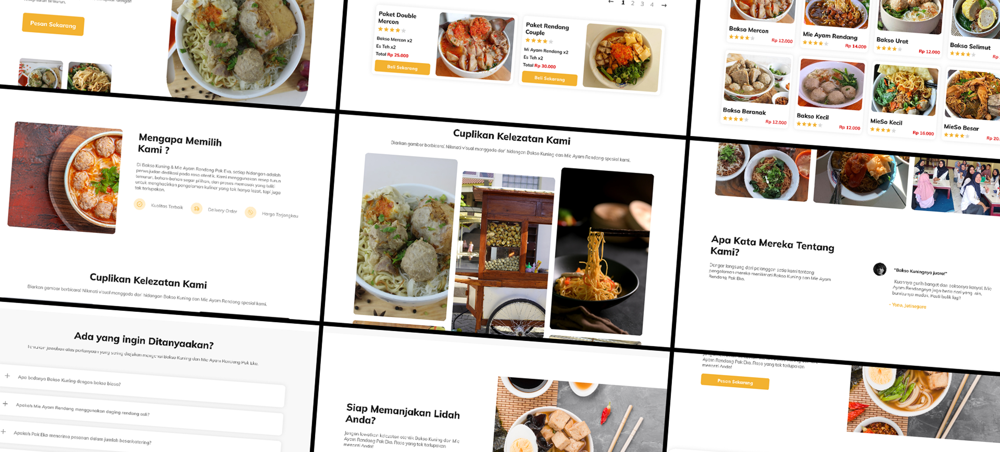

Understand the User & Context
Understand the creator's goals, audience, and professional story.
UI/UX Designer
Method: User-Centered Design (UCD)

In today’s highly competitive tech industry, a standout personal portfolio is essential for fresh graduates to showcase their expertise. This project involves designing and developing a comprehensive personal portfolio website tailored for a Web Developer and Business Analyst. The primary objective was to craft a clean, professional, and highly intuitive digital space that effectively highlights her technical skills, academic achievements, and diverse project portfolio. By combining a warm, modern aesthetic with a well-structured information architecture, this website serves as a dynamic digital resume. It is carefully designed to present complex business and technical solutions in an accessible, visually engaging format, ensuring a strong and memorable online presence for prospective recruiters.

How I Build Products
Understand the creator's goals, audience, and professional story.
Define the content and structure recruiters need to scan quickly.
Build a polished visual system that makes the work easy to explore.
Refine the flow so every project and contact point feels intentional.
UCD Process
Before designing, I conducted in-depth discussions with the client (Dewi) to understand her personal branding and career objectives. The primary users of this website are not everyday consumers, but rather Tech Recruiters and Hiring Managers. The goal was to design a clean, modern, and professional digital space that effectively highlights her technical expertise as a Web Developer and Business Analyst.
UCD Process
Translating the initial insights into actionable design goals, I specified the core requirements for the portfolio website. By defining the target audience and their specific needs, I established a solid framework. This step ensures that the website's structure and features are directly driven by the expectations of tech recruiters and the client's professional objectives.
Human resources professionals and hiring managers who have limited time to review applications.

The interface needs to be highly structured and easy to navigate. A clear visual hierarchy is essential to highlight technical projects
The design must effectively bridge her dual expertise. It requires dedicated sections to clearly showcase both her analytical problem-solving skills.

UCD Process
To bring this solution to life, I designed a layout focused on readability and seamless navigation. Once the wireframes were approved, I transitioned into a high-fidelity interactive prototype. The final design utilizes a dark mode theme paired with bold orange accents to create a modern, dynamic, yet highly professional aesthetic—ensuring her technical projects remain the center of attention.
Evaluate against Requirements
Since the scope of this project was focused exclusively on UI design, formal external usability testing was not conducted. Instead, the final phase centered on client validation and preparing the design for development. The final design was successfully approved by the client and deemed perfectly aligned with their preferences.
Design Execution
Combining strong typography, project storytelling, and a focused navigation system into a professional portfolio experience.

More Projects

GenproApps : Aplikasi Pencegahan StuntingUI/UX Designer · UX ResearcherGenpro Apps is an innovative app for stunting prevention in Indonesia.

Bakso Kuning & Mi Ayam Rendang Pak EkoUI/UX DesignerThe official website of Warung Bakso Kuning & Mi Ayam Rendang Pak Eko.
Website Personal PortofolioUI/UX Designer
A personalized portfolio website with clear visual hierarchy and smooth user flows.
I provide end-to-end digital solutions, from wireframing in Figma to fully developed websites. Let's create an engaging digital product that perfectly aligns with your business goals.